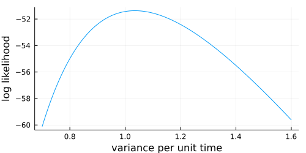

MolecularEvolution
Documentation for MolecularEvolution.
A Julia package for the flexible development of phylogenetic models.
MolecularEvolution.jl exploits Julia's multiple dispatch, implementing a fully generic suite of likelihood calculations, branchlength optimization, topology optimization, and ancestral inference. Users can construct trees using already-defined data types and models. But users can define probability distributions over their own data types, and specify the behavior of these under their own model types, and can mix and match different models on the same phylogeny.
If the behavior you need is not already available in MolecularEvolution.jl:
- If you have a new data type:
- A
Partitiontype that represents the uncertainty over your state. combine!()that merges evidence from twoPartitions.
- A
- If you have a new model:
- A
BranchModeltype that stores your model parameters. forward!()that evolves state distributions over branches, in the root-to-tip direction.backward!()that reverse-evolves state distributions over branches, in the tip-to-root direction.
- A
And then sampling, likelihood calculations, branch-length optimization, ancestral reconstruction, etc should be available for your new data or model.
Design principles
In order of importance, we aim for the following:
- Flexibility and generality
- Where possible, we avoid design decisions that limit the development of new models, or make it harder to develop new models.
- We do not sacrifice flexibility for performance.
- Scalability
- Analyses implemented using
MolecularEvolution.jlshould scale to large, real-world datasets.
- Analyses implemented using
- Performance
- While the above take precedence over speed, it should be possible to optimize your
Partition,combine!(),BranchModel,forward!()andbackward!()functions to obtain competative runtimes.
- While the above take precedence over speed, it should be possible to optimize your
Authors:
Venkatesh Kumar and Ben Murrell, with additional contributions by Sanjay Mohan, Alec Pankow, Hassan Sadiq, and Kenta Sato.
Quick example: Likelihood calculations under phylogenetic Brownian motion:
using MolecularEvolution, Plots
#First simulate a tree, using a coalescent process
tree = sim_tree(n=200)
internal_message_init!(tree, GaussianPartition())
#Simulate brownian motion over the tree
bm_model = BrownianMotion(0.0,1.0)
sample_down!(tree, bm_model)
#And plot the log likelihood as a function of the parameter value
ll(x) = log_likelihood!(tree,BrownianMotion(0.0,x))
plot(0.7:0.001:1.6,ll, xlabel = "variance per unit time", ylabel = "log likelihood")
Base.:==MolecularEvolution._mapreduceMolecularEvolution.backward!MolecularEvolution.backward!MolecularEvolution.bfs_mapreduceMolecularEvolution.branchlength_optim!MolecularEvolution.branchlength_optim!MolecularEvolution.char_proportionsMolecularEvolution.combine!MolecularEvolution.combine!MolecularEvolution.deepequalsMolecularEvolution.dfs_mapreduceMolecularEvolution.endpoint_conditioned_sample_state_dictMolecularEvolution.endpoint_conditioned_sample_state_dictMolecularEvolution.expected_subs_per_siteMolecularEvolution.felsenstein!MolecularEvolution.felsenstein_down!MolecularEvolution.forward!MolecularEvolution.forward!MolecularEvolution.gappy_Q_from_symmetric_rate_matrixMolecularEvolution.get_phylo_treeMolecularEvolution.get_phylo_treeMolecularEvolution.golden_section_maximizeMolecularEvolution.internal_message_init!MolecularEvolution.internal_message_init!MolecularEvolution.istreeconsistentMolecularEvolution.linear_scaleMolecularEvolution.log_likelihoodMolecularEvolution.log_likelihood!MolecularEvolution.longest_pathMolecularEvolution.marginal_state_dictMolecularEvolution.marginal_state_dictMolecularEvolution.matrix_for_displayMolecularEvolution.max_joint_state_dictMolecularEvolution.max_joint_state_dictMolecularEvolution.midpointMolecularEvolution.name2node_dictMolecularEvolution.nni_optim!MolecularEvolution.nni_optim!MolecularEvolution.node_distancesMolecularEvolution.nonreversibleQMolecularEvolution.parent_listMolecularEvolution.partition2obsMolecularEvolution.partition2obsMolecularEvolution.quadratic_CIMolecularEvolution.quadratic_CIMolecularEvolution.read_newick_treeMolecularEvolution.reversibleQMolecularEvolution.reversibleQMolecularEvolution.root2tip_distancesMolecularEvolution.sample_down!MolecularEvolution.sample_down!MolecularEvolution.sample_from_message!MolecularEvolution.savefig_tweakSVGMolecularEvolution.savefig_tweakSVGMolecularEvolution.shortest_path_between_nodesMolecularEvolution.sibling_indsMolecularEvolution.siblingsMolecularEvolution.sim_treeMolecularEvolution.sim_treeMolecularEvolution.sim_treeMolecularEvolution.total_LLMolecularEvolution.tree2distancesMolecularEvolution.tree2shared_branch_lengthsMolecularEvolution.tree_polish!MolecularEvolution.tree_polish!MolecularEvolution.unc2probvecMolecularEvolution.unc2probvecMolecularEvolution.values_from_phylo_treeMolecularEvolution.values_from_phylo_tree
Base.:== — Method==(t1, t2)
Defaults to pointer equalityMolecularEvolution._mapreduce — MethodInternal function. Helper for bfsmapreduce and dfsmapreduce
MolecularEvolution.backward! — Methodbackward!(dest::Partition, source::Partition, model::BranchModel, node::FelNode)Propagate the source partition backwards along the branch to the destination partition, under the model. Note: You should overload this for your own BranchModel types.
MolecularEvolution.bfs_mapreduce — MethodPerforms a BFS map-reduce over the tree, starting at a given node For each node, mapreduce is called as: mapreduce(currnode::FelNode, prevnode::FelNode, aggregator) where prev_node is the previous node visited on the path from the start node to the current node It is expected to update the aggregator, and not return anything.
Not exactly conventional map-reduce, as map-reduce calls may rely on state in the aggregator added by map-reduce calls on other nodes visited earlier.
MolecularEvolution.branchlength_optim! — Methodbranchlength_optim!(tree::FelNode, models; partition_list = nothing, tol = 1e-5)Uses golden section search to optimize all branches recursively, maintaining the integrity of the messages. Requires felsenstein!() to have been run first. models can either be a single model (if the messages on the tree contain just one Partition) or an array of models, if the messages have >1 Partition, or a function that takes a node, and returns a Vector{<:BranchModel} if you need the models to vary from one branch to another. partition_list (eg. 1:3 or [1,3,5]) lets you choose which partitions to run over (but you probably want to optimize branch lengths with all models). tol is the tolerance for the golden section search.
MolecularEvolution.char_proportions — Methodchar_proportions(seqs, alphabet::String)Takes a vector of sequences and returns a vector of the proportion of each character across all sequences. An example alphabet argument is MolecularEvolution.AAstring.
MolecularEvolution.combine! — Methodcombine!(dest::P, src::P) where P<:PartitionCombines evidence from two partitions of the same type, storing the result in dest. Note: You should overload this for your own Partititon types.
MolecularEvolution.deepequals — Methoddeepequals(t1, t2)Checks whether two trees are equal by recursively calling this on all fields, except :parent, in order to prevent cycles. In order to ensure that the :parent field is not hiding something different on both trees, ensure that each is consistent first (see: istreeconsistent).
MolecularEvolution.dfs_mapreduce — MethodPerforms a DFS map-reduce over the tree, starting at a given node See bfs_mapreduce for more details.
MolecularEvolution.endpoint_conditioned_sample_state_dict — Methodendpoint_conditioned_sample_state_dict(tree::FelNode, model; partition_list = 1:length(tree.message), node_message_dict = Dict{FelNode,Vector{Partition}}())Takes in a tree and a model (which can be a single model, an array of models, or a function that maps FelNode->Array{<:BranchModel}), and draws samples under the model conditions on the leaf observations. These samples are stored in the nodemessagedict, which is returned. A subset of partitions can be specified by partition_list, and a dictionary can be passed in to avoid re-allocating memory, in case you're running this over and over.
MolecularEvolution.expected_subs_per_site — Methodexpected_subs_per_site(Q,mu)Takes a rate matrix Q and an equilibrium frequency vector, and calculates the expected number of substitutions per site.
MolecularEvolution.felsenstein! — Methodfelsenstein!(node::FelNode, models; partition_list = nothing)Should usually be called on the root of the tree. Propagates Felsenstein pass up from the tips to the root. models can either be a single model (if the messages on the tree contain just one Partition) or an array of models, if the messages have >1 Partition, or a function that takes a node, and returns a Vector{<:BranchModel} if you need the models to vary from one branch to another. partition_list (eg. 1:3 or [1,3,5]) lets you choose which partitions to run over.
MolecularEvolution.felsenstein_down! — Methodfelsenstein_down!(node::FelNode, models; partition_list = 1:length(tree.message), temp_message = deepcopy(tree.message))Should usually be called on the root of the tree. Propagates Felsenstein pass down from the root to the tips. felsenstein!() should usually be called first. models can either be a single model (if the messages on the tree contain just one Partition) or an array of models, if the messages have >1 Partition, or a function that takes a node, and returns a Vector{<:BranchModel} if you need the models to vary from one branch to another. partition_list (eg. 1:3 or [1,3,5]) lets you choose which partitions to run over.
MolecularEvolution.forward! — Methodforward!(dest::Partition, source::Partition, model::BranchModel, node::FelNode)Propagate the source partition forwards along the branch to the destination partition, under the model. Note: You should overload this for your own BranchModel types.
MolecularEvolution.gappy_Q_from_symmetric_rate_matrix — Methodgappy_Q_from_symmetric_rate_matrix(sym_mat, gap_rate, eq_freqs)Takes a symmetric rate matrix and gap rate (governing mutations to and from gaps) and returns a gappy rate matrix. The equilibrium frequencies are multiplied on column-wise.
MolecularEvolution.get_phylo_tree — Methodget_phylo_tree(molev_root::FelNode; data_function = (x -> Tuple{String,Float64}[]))Converts a FelNode tree to a Phylo tree. The data_function should return a list of tuples of the form (key, value) to be added to the Phylo tree data Dictionary. Any key/value pairs on the FelNode node_data Dict will also be added to the Phylo tree.
MolecularEvolution.golden_section_maximize — MethodGolden section search.
Given a function f with a single local minimum in the interval [a,b], gss returns a subset interval [c,d] that contains the minimum with d-c <= tol.
Examples
julia> f(x) = -(x-2)^2
f (generic function with 1 method)
julia> m = golden_section_maximize(f, 1, 5, identity, 1e-10)
2.0000000000051843From: https://en.wikipedia.org/wiki/Golden-section_search
MolecularEvolution.internal_message_init! — Methodinternal_message_init!(tree::FelNode, partition::Partition)
Initializes the message template for each node in the tree, as an array of the partition.MolecularEvolution.internal_message_init! — Methodinternal_message_init!(tree::FelNode, empty_message::Vector{<:Partition})
Initializes the message template for each node in the tree, allocating space for each partition.MolecularEvolution.istreeconsistent — Methodistreeconsistent(root)Checks whether the :parent field is set to be consistent with the :child field for all nodes in the subtree.
MolecularEvolution.linear_scale — Methodlinear_scale(val,in_min,in_max,out_min,out_max)Linearly maps val which lives in [inmin,inmax] to a value in [outmin,outmax]
MolecularEvolution.log_likelihood! — Methodlog_likelihood!(tree::FelNode, models; partition_list = nothing)First re-computes the upward felsenstein pass, and then computes the log likelihood of this tree. models can either be a single model (if the messages on the tree contain just one Partition) or an array of models, if the messages have >1 Partition, or a function that takes a node, and returns a Vector{<:BranchModel} if you need the models to vary from one branch to another. partition_list (eg. 1:3 or [1,3,5]) lets you choose which partitions to run over.
MolecularEvolution.log_likelihood — Methodlog_likelihood(tree::FelNode, models; partition_list = nothing)Computed the log likelihood of this tree. Requires felsenstein!() to have been run. models can either be a single model (if the messages on the tree contain just one Partition) or an array of models, if the messages have >1 Partition, or a function that takes a node, and returns a Vector{<:BranchModel} if you need the models to vary from one branch to another. partition_list (eg. 1:3 or [1,3,5]) lets you choose which partitions to run over.
MolecularEvolution.longest_path — MethodReturns the longest path in a tree For convenience, this is returned as two lists of form: [leafnode, parentnode, .... root] Where the leaf_node nodes are selected to be the furthest away
MolecularEvolution.marginal_state_dict — Methodmarginal_state_dict(tree::FelNode, model; partition_list = 1:length(tree.message), node_message_dict = Dict{FelNode,Vector{Partition}}())Takes in a tree and a model (which can be a single model, an array of models, or a function that maps FelNode->Array{<:BranchModel}), and returns a dictionary mapping nodes to their marginal reconstructions (ie. P(state|all observations,model)). A subset of partitions can be specified by partition_list, and a dictionary can be passed in to avoid re-allocating memory, in case you're running this over and over.
MolecularEvolution.matrix_for_display — Methodmatrix_for_display(Q,labels)Takes a numerical matrix and a vector of labels, and returns a typically mixed type matrix with the numerical values and the labels. This is to easily visualize rate matrices in eg. the REPL.
MolecularEvolution.max_joint_state_dict — Methodmax_joint_state_dict(tree::FelNode, model; partition_list = 1:length(tree.message), node_message_dict = Dict{FelNode,Vector{Partition}}())Takes in a tree and a model (which can be a single model, an array of models, or a function that maps FelNode->Array{<:BranchModel}), and returns a dictionary mapping nodes to their joint maximum likelihood reconstructions (ie. state, such that P(state|all observations,model) is maximized). A subset of partitions can be specified by partition_list, and a dictionary can be passed in to avoid re-allocating memory, in case you're running this over and over.
MolecularEvolution.midpoint — MethodReturns a midpoint as a node and a distance above it where the midpoint is
MolecularEvolution.name2node_dict — Methodname2node_dict(root)
Returns a dictionary of leaf nodes, indexed by node.name. Can be used to associate sequences with leaf nodes.
MolecularEvolution.nni_optim! — Methodnni_optim!(tree::FelNode, models; partition_list = nothing, tol = 1e-5)Uses golden section search to optimize all branches recursively, maintaining the integrity of the messages. Requires felsenstein!() to have been run first. models can either be a single model (if the messages on the tree contain just one Partition) or an array of models, if the messages have >1 Partition, or a function that takes a node, and returns a Vector{<:BranchModel} if you need the models to vary from one branch to another. partitionlist (eg. 1:3 or [1,3,5]) lets you choose which partitions to run over (but you probably want to optimize tree topology with all models). accrule allows you to specify a function that takes the current and proposed log likelihoods, and if true is returned the move is accepted.
MolecularEvolution.node_distances — MethodCompute the distance to all other nodes from a given node
MolecularEvolution.nonreversibleQ — MethodnonreversibleQ(param_vec)Takes a vector of parameters and returns a nonreversible rate matrix.
MolecularEvolution.parent_list — MethodProvides a list of parent nodes nodes from this node up to the root node
MolecularEvolution.partition2obs — Methodpartition2obs(part::Partition)Extracts the most likely state from a Partition, transforming it into a convenient type. For example, a NucleotidePartition will be transformed into a nucleotide sequence of type String. Note: You should overload this for your own Partititon types.
MolecularEvolution.quadratic_CI — Methodquadratic_CI(f::Function,opt_params::Vector, param_ind::Int; rate_conf_level = 0.99, nudge_amount = 0.01)Takes a NEGATIVE log likelihood function (compatible with Optim.jl), a vector of maximizing parameters, an a parameter index. Returns the quadratic confidence interval.
MolecularEvolution.quadratic_CI — Methodquadratic_CI(xvec,yvec; rate_conf_level = 0.99)Takes xvec, a vector of parameter values, and yvec, a vector of log likelihood evaluations (note: NOT the negative LLs you) might use with Optim.jl. Returns the confidence intervals computed by a quadratic approximation to the LL.
MolecularEvolution.read_newick_tree — Methodreadnewicktree(treefile)
Reads in a tree from a file, of type FelNode
MolecularEvolution.reversibleQ — MethodreversibleQ(param_vec,eq_freqs)Takes a vector of parameters and equilibrium frequencies and returns a reversible rate matrix. The parameters are the upper triangle of the rate matrix, with the diagonal elements omitted, and the equilibrium frequencies are multiplied column-wise.
MolecularEvolution.root2tip_distances — Methodroot2tips(root::AbstractTreeNode)Returns a vector of root-to-tip distances, and a node-to-index dictionary. Be aware that this dictionary will break when any of the node content (ie. anything on the tree) changes.
MolecularEvolution.sample_down! — Methodsampledown!(root::FelNode,models,partitionlist)
Generates samples under the model. The root.parentmessage is taken as the starting distribution, and node.message contains the sampled messages. models can either be a single model (if the messages on the tree contain just one Partition) or an array of models, if the messages have >1 Partition, or a function that takes a node, and returns a Vector{<:BranchModel} if you need the models to vary from one branch to another. partitionlist (eg. 1:3 or [1,3,5]) lets you choose which partitions to run over.
MolecularEvolution.sample_from_message! — Methodsample_from_message!(message::Vector{<:Partition})#Replaces an uncertain message with a sample from the distribution represented by each partition.
MolecularEvolution.savefig_tweakSVG — Methodsavefig_tweakSVG(fname; hack_bounding_box = true, new_viewbox = nothing, linecap_round = true)Note: Might only work if you're using the GR backend!! Saves a figure created using the Phylo Plots recipe, but tweaks the SVG after export. new_viewbox needs to be an array of 4 numbers, typically starting at [0 0 plot_width*4 plot_height*4] but this lets you add shifts, in case the plot is getting cut off.
eg. savefig_tweakSVG("export.svg", new_viewbox = [-100, -100, 3000, 4500])
MolecularEvolution.shortest_path_between_nodes — MethodShortest path between nodes, returned as two lists, each starting with one of the two nodes, and ending with the common ancestor
MolecularEvolution.sibling_inds — Methodsibling_inds(node)
Returns logical indices of the siblings in the parent's child's vector.
MolecularEvolution.siblings — Methodsiblings(node)
Returns a vector of siblings of node.
MolecularEvolution.sim_tree — Methodsim_tree(add_limit::Int,Ne_func,sample_rate_func; nstart = 1, time = 0.0, mutation_rate = 1.0, T = Float64)Simulates a tree of type FelNode{T}. Allows an effective population size function (Nefunc), as well as a sample rate function (samplerate_func), which can also just be constants.
Nefunc(t) = (sin(t/10)+1)*100.0 + 10.0 root = simtree(600,Nefunc,1.0) simpletree_draw(ladderize(root))
MolecularEvolution.sim_tree — Methodsim_tree(;n = 10)Simulates tree with constant population size.
MolecularEvolution.total_LL — Methodtotal_LL(p::Partition)
If called on the root, it returns the log likelihood associated with that partition. Can be overloaded for complex partitions without straightforward site log likelihoods.
MolecularEvolution.tree2distances — Methodtree2distances(root::AbstractTreeNode)Returns a distance matrix for all pairs of leaf nodes, and a node-to-index dictionary. Be aware that this dictionary will break when any of the node content (ie. anything on the tree) changes.
MolecularEvolution.tree2shared_branch_lengths — Methodtree2distances(root::AbstractTreeNode)Returns a distance matrix for all pairs of leaf nodes, and a node-to-index dictionary. Be aware that this dictionary will break when any of the node content (ie. anything on the tree) changes.
MolecularEvolution.tree_polish! — Methodtree_polish!(newt, models; tol = 10^-4, verbose = 1, topology = true)
Takes a tree and a model function, and optimizes branch lengths and, optionally, topology. Returns final LL. Set verbose=0 to suppress output. Note: This is not intended for an exhaustive tree search (which requires different heuristics), but rather to polish a tree that is already relatively close to the optimum.
MolecularEvolution.unc2probvec — Methodunc2probvec(v)Takes an array of N-1 unbounded values and returns an array of N values that sums to 1. Typically useful for optimizing over categorical probability distributions.
MolecularEvolution.values_from_phylo_tree — Methodvalues_from_phylo_tree(phylo_tree, key)
Returns a list of values from the given key in the nodes of the phylo_tree, in an order that is somehow compatible with the order the nodes get plotted in.